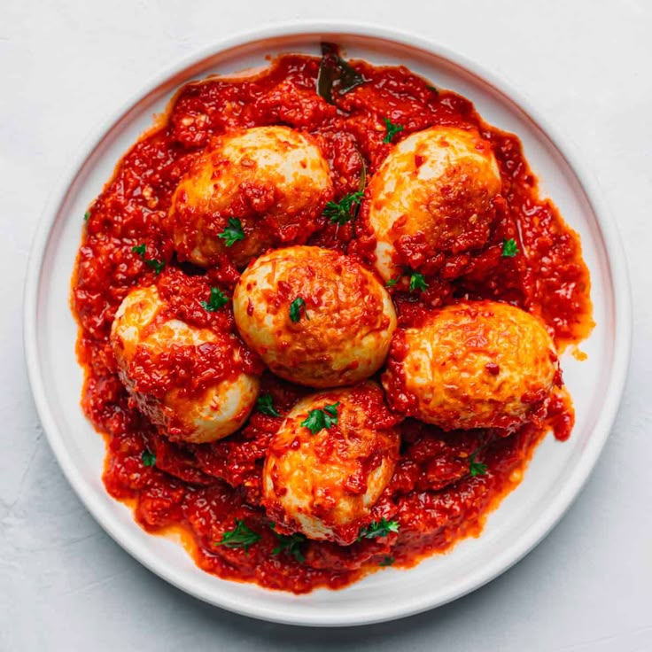

Telor Balado

Home
Deskripsi
Telur balado adalah hidangan khas Minangkabau berupa telur rebus yang digoreng hingga berkulit, lalu dimasak dalam sambal merah pedas gurih. Hidangan ini populer karena praktis, berwarna merah menggoda, dan tekstur kenyal-lembut. Bahan utamanya meliputi telur, cabai merah, bawang, dan tomat, dimasak dengan menumis bumbu halus.
Bahan-bahan
- 6-10 butir telur ayam, rebus dan kupas
- 10 buah cabai merah keriting (sesuai selera)
- 5 buah cabai merah besar
- 8 siung bawang merah
- 3 siung bawang putih
- 1-2 buah tomat
- 3 lembar daun jeruk
- Garam, gula, dan kaldu bubuk secukupnya
Langkah-langkah
- Panaskan Minyak di wajan
- Goreng Telur: Panaskan minyak, goreng telur rebus yang sudah dikupas hingga berkulit dan berwarna kuning keemasan. Angkat dan tiriskan
- Haluskan Bumbu: Blender atau ulek kasar cabai merah besar, cabai keriting, bawang merah, bawang putih, dan tomat.
- Tumis Bumbu: Panaskan minyak sisa menggoreng telur. Tumis bumbu halus, daun jeruk, dan serai hingga harum, matang, dan minyaknya keluar (tanak).
- Bumbui: Tambahkan garam, gula, dan kaldu bubuk. Koreksi rasa.
- Campurkan Telur: Masukkan telur goreng, aduk rata hingga bumbu meresap. Masak sebentar dengan api kecil.
- Sajikan: Angkat dan sajikan telur balado dengan nasi hangat.